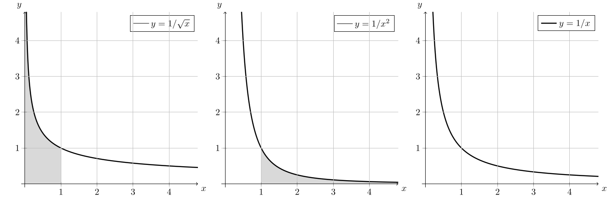
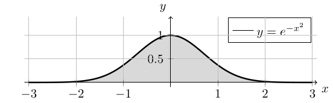
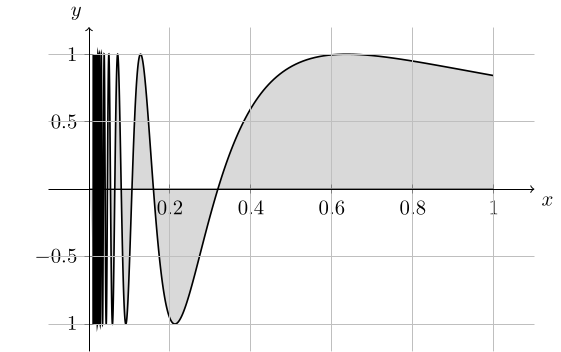

2. 広義積分とその応用
通常のリーマン積分では, 有界な関数を有界な閉区間上で積分する. 一方で, 物理などに積分のアイデアを応用する際は, 無限に広い区間上での "積分" や, 積分区間内で非有界な関数の "積分" を考えたい場合がある. ここでは, そのような状況を扱うことができる 広義積分 のアイデアを紹介する.
2.1: 広義積分
まずは不連続な関数に対するリーマン積分について思い出しておこう:
区間 $[a, b]$ 上の有界な関数 $f(x)$ が, 端点 $x=a, b$ でのみ不連続であるとする. また, 端点における片側極限 \[ \lim_{x\searrow a}f(x),\qquad \lim_{x\nearrow b}f(x) \] が存在するとする. このとき, 関数 \[ \widetilde{f}(x) = \left\{\begin{array}{rl} \displaystyle\lim_{x\searrow a}f(x) & (x=a), \cr f(x) & (a\lt x\lt b), \cr \displaystyle\lim_{x\nearrow b}f(x) & (x=b) \end{array}\right. \] は連続であり (従ってリーマン積分可能であり), さらに $f(x)$ も区間 $[a, b]$ 上でリーマン積分可能であり, \[ \int_a^b f(x)~dx = \int_a^b \widetilde{f}(x)~dx \] が成立する.
- 関数 $f(x)$ は区間 $[a, b)$ (または $(a, b]$) 上で連続であるとする. このとき, \[ \int_a^b f(x)~dx = \lim_{t\nearrow b}\int_a^tf(x)~dx \quad\left(\text{または}\quad \int_a^b f(x)~dx = \lim_{t\searrow a}\int_t^b f(x)~dx\right) \] と定義し, これを広義積分と呼ぶ. 右辺の片側極限が (有限の値として) 存在するとき, 広義積分は収束するといい, 存在しないとき広義積分は発散するという.
- 関数 $f(x)$ は区間 $[a, \infty)$ (または $(-\infty, b]$) 上で連続であるとする. このとき, \[ \int_a^{\infty} f(x)~dx = \lim_{t\to\infty}\int_a^t f(x)~dx \quad\left(\text{または}\quad \int_{-\infty}^b f(x)~dx = \lim_{t\to-\infty}\int_t^b f(x)~dx\right) \] と定義し, これを広義積分と呼ぶ. 右辺の極限が (有限の値として) 存在するとき, 広義積分は収束するといい, 存在しないとき広義積分は発散するという.
なお, 通常の意味でリーマン積分可能な関数の広義積分は, そのリーマン積分に一致する. 以下では, 広義積分も含めて単に積分と呼ぶことがある.
- 積分 \[ \int_0^1 \dfrac{1}{\sqrt{x}}~dx \] を計算してみよう. 被積分関数は区間 $[0, 1]$ 上で連続ではない ($x\searrow 0$ としたとき非有界である) ため, この積分は通常のリーマン積分ではなく広義積分であり, \[ \begin{array}{rl} \displaystyle\int_0^1\dfrac{1}{\sqrt{x}}~dx &= \displaystyle\lim_{\varepsilon\searrow 0}\int_{\varepsilon}^1 \dfrac{1}{\sqrt{x}}~dx \cr &= \displaystyle\lim_{\varepsilon\searrow 0} \left[2\sqrt{x}\right]_{\varepsilon}^1 \cr &= 2. \end{array} \]
- 広義積分 \[ \int_1^{\infty} \dfrac{1}{x^2}~dx \] を計算してみよう (区間が有界でないため, これが広義積分であることは明らか). \[ \begin{array}{rl} \displaystyle\int_1^{\infty}\dfrac{1}{x^2}~dx &= \displaystyle\lim_{t\to\infty}\int_1^t \dfrac{1}{x^2}~dx \cr &= \displaystyle\lim_{t\to\infty} \left[-\dfrac{1}{x}\right]_1^t \cr &= 1. \end{array} \]
- 広義積分 \[ \int_0^1 \dfrac{1}{x}~dx, \qquad \int_1^{\infty} \dfrac{1}{x}~dx \] はどちらも発散する.
- 広義積分の値も, やはり直感的には関数で表される領域の面積に対応している. 下の図のように, 関数の値が無限大に発散していたり, もしくは積分区間が無限に広いとしても, 広義積分に対応する領域の面積が無限大に発散するとは限らない.

$\alpha\lt 0$ とする.
- 広義積分 \[ \int_0^1 x^{\alpha}~dx \] が収束する $\alpha$ の条件を求めよ.
- 広義積分 \[ \int_1^{\infty} x^{\alpha}~dx \] が収束する $\alpha$ の条件を求めよ.
- 上の広義積分は \[ \int_0^1 x^{\alpha}~dx = \lim_{t\searrow 0} \left[\dfrac{1}{\alpha+1}x^{\alpha+1}\right]_t^1 = \dfrac{1}{\alpha+1}\lim_{t\searrow 0}(1-t^{\alpha+1}) \] であり, $-1\lt\alpha\lt0$ ならば収束する. 一方, $\alpha\lt -1$ のときは極限が発散し, また $\alpha=-1$ のときは \[ \int_0^1 x^{-1}~dx = \lim_{t\searrow 0}\log t \to \infty \] より発散するため, 広義積分は収束しない.
- 下の広義積分は \[ \int_1^{\infty} x^{\alpha}~dx = \lim_{t\to \infty} \left[\dfrac{1}{\alpha+1}x^{\alpha+1}\right]_1^t = \dfrac{1}{\alpha+1}\lim_{t\to\infty}(t^{\alpha+1}-1) \] であり, $\alpha\lt -1$ なら収束, そうでなければ発散する.
関数 $f(x)$ が区間 $(a, b)$ で連続である場合の広義積分 (例えば関数の値が両端点で発散する場合) や, $(-\infty, \infty)$ での広義積分を考える際には, 適当な $c\in (a, b)$ もしくは $c\in (-\infty, \infty)$ をとり \[ \begin{array}{c} \displaystyle\int_a^b f(x)~dx = \lim_{t_1\searrow a}\int_{t_1}^c f(x)~dx + \lim_{t_2\nearrow b}\int_c^{t_2}f(x)~dx, \cr \displaystyle\int_{-\infty}^{\infty} f(x)~dx = \lim_{t_1\to -\infty}\int_{t_1}^c f(x)~dx + \lim_{t_2\to \infty}\int_c^{t_2}f(x)~dx \end{array} \] のように定義する. ここで, 積分区間を適当に分割した上で, $2$ つの極限はそれぞれ独立に考える必要がある点に注意.
積分 \[ \int_{-1}^1\dfrac{1}{\sqrt{1-x^2}}~dx \] を計算してみよう. 被積分関数は両端点 $x=\pm1$ で発散しているため, この積分は広義積分であり, 例えば $x=0$ で積分区間を分割することで \[ \begin{array}{rl} \displaystyle\int_{-1}^1\dfrac{1}{\sqrt{1-x^2}}~dx &= \displaystyle\lim_{t_1\searrow -1}\int_{t_1}^0\dfrac{1}{\sqrt{1-x^2}}~dx + \lim_{t_2\nearrow 1}\int_0^{t_2}\dfrac{1}{\sqrt{1-x^2}}~dx \cr &= \displaystyle\lim_{t_1\searrow -1}\left[\sin^{-1}x\right]_{t_1}^0 + \lim_{t_2\nearrow 1}\left[\sin^{-1}x\right]_0^{t_2} \cr &= \pi \end{array} \] と計算することができる.
積分 \[ \int_{-1}^1 \dfrac{1}{x}~dx \] を計算してみよう. もしも \[ \int_{-1}^1 \dfrac{1}{x}~dx = \lim_{t\nearrow 1} \left(\int_{-t}^0 \dfrac{1}{x}~dx + \int_0^t \dfrac{1}{x}~dx\right) \] のようにしてしまうと, 積分区間の反転より $0$ になりそうな気がするが これは誤りである. 正しくは, 積分区間を分割した上で, $2$ つの片側極限は独立に考える必要があり, \[ \int_{-1}^1 \dfrac{1}{x}~dx = \lim_{t_1\nearrow 1} \int_{-t_1}^0 \dfrac{1}{x}~dx + \lim_{t_2\nearrow 1}\int_0^t_2 \dfrac{1}{x}~dx \] である. 右辺の $2$ つの広義積分はどちらも発散するため, 左辺の広義積分も発散する.
広義積分 \[ \int_{-\infty}^{\infty} e^{-x^2}~dx = \sqrt{\pi} \] は ガウス積分 (Gaussian integral) と呼ばれ, 応用において極めて重要である.

広義積分についても, 通常のリーマン積分と同様の性質や計算テクニックを利用した式変形が可能である. 特に積分区間の分割と組み合わせて, 区間の内部で無限大に発散する関数の広義積分を考えることも可能である.
積分 \[ \int_{-1}^1\log|x| ~ dx \] を計算してみよう. この積分は \[ \begin{array}{rl} \displaystyle\int_{-1}^1 \log|x|~dx &= \displaystyle\int_{-1}^0\log|x|~dx + \int_0^1\log|x|~dx \quad (\text{積分区間の分割}) \cr &= \displaystyle\int_{-1}^0\log(-x)~dx + \int_0^1\log x~dx \cr &= -\displaystyle\int_1^0\log y~dy + \int_0^1\log x~dx \quad(\text{第 $1$ 項で $y=-x$ と変数変換})\cr &= \displaystyle\int_0^1\log y~dy + \int_0^1\log x~dx \quad (\text{積分区間の反転}) \cr &= 2\displaystyle\int_0^1\log x~dx \cr &=2 \displaystyle\lim_{t\searrow 0}\int_t^1 \log x~dx \cr &= 2\displaystyle\lim_{t\searrow 0}\left[x\log x - x\right]_t^1 \cr &= 2\displaystyle\lim_{t\searrow 0}(-t\log t - 1 + t) \end{array} \] と変形できる. ここで (ロピタルの定理より) \[ \lim_{x\searrow 0}(x\log x) = 0 \] であることに注意すれば, 上の極限を計算することで \[ \int_{-1}^1\log|x| ~ dx = -2 \] が得られる.
$a\gt 0$, $b\neq 0$ とする. このとき, 積分 \[ \int_0^{\infty} e^{-ax}\cos bx~dx \] を求めよ.
部分積分も通常の積分と同様に計算すれば良い: 真面目に書くと \[ \begin{array}{rl} I = \displaystyle\int_0^{\infty} e^{-ax}\cos bx~dx &= \displaystyle \lim_{t\to\infty}\left(\left[\dfrac{1}{b}e^{-ax}\sin bx\right]_0^{t} + \int_0^{t}\dfrac{a}{b}e^{-ax}\sin bx~dx\right) \cr &= \dfrac{a}{b}\displaystyle \lim_{t\to\infty}\left(\left[-\dfrac{1}{b}e^{-ax}\cos bx\right]_0^{t} - \int_0^{t}\dfrac{a}{b}e^{-ax}\cos bx~dx\right) \cr &= \dfrac{a}{b}\left(\dfrac{1}{b} - \dfrac{a}{b}I\right). \end{array} \] 従って \[ I = \dfrac{a/b^2}{1+a^2/b^2} = \dfrac{a}{a^2+b^2}. \]
さらに, リーマン積分の単調性も広義積分において同様に利用可能であり, 従って広義積分の値を大雑把に見積もり, 収束するか否かを判定することが可能である.
区間 $(a, b)$ (もしくは $[a, \infty)$, $(-\infty, b]$, $(-\infty, \infty)$ など) 上で連続な関数 $f(x)$, $g(x)$ について, 全ての $x\in (a, b)$ に対し $0\le |f(x)| \le g(x)$ であるとする. このとき, \[ \begin{array}{rl} \text{広義積分 $\displaystyle\int_a^b g(x)~dx$ が収束する} &\implies \text{広義積分 $\displaystyle\int_a^b |f(x)|~dx$ が収束する} \cr &\implies \text{広義積分 $\displaystyle\int_a^b f(x)~dx$ が収束する} \end{array} \] が成立する.
条件より $a\lt x_1\lt x_2\lt b$ を満たす全ての $x_1$, $x_2$ に対し, 通常のリーマン積分の性質より \[ \left|\int_{x_1}^{x_2} f(x)~dx\right| \le \int_{x_1}^{x_2} |f(x)|~dx \le \int_{x_1}^{x_2} g(x)~dx \] が成立するため, この極限を取ることで欲しい結果が得られる (実際には, この極限を取る部分はきちんと考える必要があるが, ここでは省略する).
積分 \[ \int_0^1 f(x)~dx = \int_0^1 \sin\dfrac{1}{x}~dx \] を考えてみよう. ここで, $f(x)$ の定義域は $(0, 1]$ であると思うことにすれば, これは広義積分である ($f(0)$ を適当な有限値により定めれば通常のリーマン積分と思うこともできる). この広義積分が収束することは, $g(x) \equiv 1$ という定数関数に対して $|f(x)| \le g(x)$ であることから判定できる. 次に, この広義積分の値を求めてみよう, 例えば $t=1/x$ と変数変換して \[ \begin{array}{rl} \displaystyle\int_0^1\sin\dfrac{1}{x}~dx &= \displaystyle\int_1^{\infty}\dfrac{\sin t}{t^2}~dt \cr &= \displaystyle\left[-\dfrac{\sin t}{t}\right]_1^{\infty} + \displaystyle\int_1^{\infty}\dfrac{\cos t}{t}~dt. \end{array} \] 第 $1$ 項は $\sin 1$ である (本来は \[ \lim_{r\to\infty}\left[-\dfrac{\sin t}{t}\right]_1^{r} \] などと書くべきではあるが, 上の表記でも意味は明らかだろう). 一方, 第 $2$ 項に現れる広義積分は, 実は初等関数で表現できないことが知られている. しかしながら, この形の積分はしばしば現れるものであり, 余弦積分 という名前が付けられている: \[ \operatorname{Ci}(x) = -\int_x^{\infty}\dfrac{\cos t}{t}~dt. \] 余弦積分のように, 応用上の重要性から特別に名前が付けられている関数は 特殊関数 と呼ばれる. 上の積分の値も, 余弦積分を用いることで \[ \int_0^1 f(x)~dx = \int_0^1 \sin\dfrac{1}{x}~dx = \sin 1 - \operatorname{Ci}(1) \] と表すことができる.

上の定理の対偶を考えることで, $f(x)$ の広義積分が収束しないとき, $g(x)$ の広義積分も収束しないこともわかる. 例えば, \[ \int_1^{\infty}g(x)~dx = \int_1^{\infty}\dfrac{1}{x-\log x}~dx \] という広義積分は, 被積分関数が \[ f(x) = \dfrac{1}{x} \le \dfrac{1}{x-\log x} = g(x) \qquad (x\ge 1) \] であることと, 広義積分 \[ \int_1^{\infty} f(x)~dx = \int_1^{\infty} \dfrac{1}{x}~dx \] が収束しないことから, やはり収束しないと判定することができる.
広義積分 \[ \int_0^{\infty}\dfrac{\sin x}{x}~dx \] が収束することを証明せよ.
$f(x) = x^{-1}\sin x$ とおく. まず, $x\ge 0$ において $|\sin x|\le x$ が成立することに注意すれば, 区間 $(0, \infty)$ 上で $|f(x)|\le 1$ である. 従って, 例えば $x=1$ で区間分割することで \[ \begin{array}{rl} \displaystyle\int_0^{\infty}\dfrac{\sin x}{x}~dx &= \displaystyle\underbrace{\int_0^1f(x)~dx}_{=I_1} + \underbrace{\int_1^{\infty}f(x)~dx}_{=I_2} \cr \end{array} \] とした際, 広義積分 \[ \int_0^1 1~dx = 1 \] が収束する (特に通常の意味での積分が可能である) ことから, 広義積分 $I_1$ が収束することがわかる. 次に $I_2$ に注目すると, \[ I_2 = \int_1^{\infty}\dfrac{\sin x}{x}~dx = \lim_{t\to\infty}\left(\left[-\dfrac{\cos x}{x}\right]_1^t - \int_1^t\dfrac{\cos x}{x^2}~dx\right) = \cos 1 - \underbrace{\int_1^{\infty}\dfrac{\cos x}{x^2}~dx}_{=I_3} \] である. ここで, $x\ge 1$ において $|x^{-2}\cos x| \le x^{-2}$ であり, 広義積分 \[ \int_1^{\infty}x^{-2}~dx \] が収束することから, 広義積分 $I_3$ が収束することがわかる.
2.2: 特殊関数
先ほども言及したように, 頻繁に利用されるために特別な名前が付けられている関数を 特殊関数 と呼ぶ. 例えば三角関数 $\sin x$ なども特殊関数であり, その利便性および重要性は明らかだろう. ここでは, 特に広義積分として表すことができる特殊関数をいくつか紹介しよう. 例えば \[ \begin{array}{c} \operatorname{Si}(x) = \displaystyle\int_0^x \dfrac{\sin t}{t}~dt, \cr \operatorname{Ci}(x) = -\displaystyle\int_x^{\infty} \dfrac{\cos t}{t}~dt \end{array} \] はそれぞれ 正弦積分 (sine integral), 余弦積分 (cosine integral) と呼ばれ, またこれらは総称して 三角積分 (trigonometric integral) と呼ばれる. これらは初等関数として表現することはできないが, 広義積分として表すことができる特殊関数の典型例である.
次に ガンマ関数 について紹介しよう:
$z\gt 0$ に対し \[ \Gamma(z) = \int_0^{\infty}t^{z-1}e^{-t}~dt \] により定義される関数を ガンマ関数 (Gamma function) という.
ガンマ関数の性質を述べる前に, この広義積分が収束することを証明しよう. まず, $f(t) = t^{z-1}e^{-t}$ とおき, 積分区間を $t=1$ で分割することで \[ \Gamma(z) = \underbrace{\int_0^1f(t)~dt}_{=I_1} + \underbrace{\int_1^{\infty}f(t)~dt}_{I_2} \] となるため, これら $2$ つの広義積分の収束性をそれぞれ判定すればよい:
- $0\lt t\le 1$ のとき, $|f(t)| = f(t) \le t^{z-1}$ であり, \[ \int_0^1 t^{z-1}~dt = \dfrac{1}{z} \] であることから広義積分 $I_1$ は収束する.
- $1\le t\lt \infty$ のとき, \[ \lim_{t\to\infty}t^{z+1}e^{-t} = 0 \] であることに注目すると, ある $T$ が存在して \[ t^{z+1}e^{-t} \le 1 \quad (t\ge T), \quad\text{つまり} \quad f(t) \le \dfrac{1}{t^2} \quad (t\ge T) \] となっている. 従って, \[ \int_1^{\infty}f(t) ~dt = \underbrace{\int_1^Tf(t)~dt}_{\text{通常の積分}} + \int_T^{\infty}f(t)~dt \] の第 $2$ 項の広義積分は収束する. 従って, 広義積分 $I_2$ も収束する.
従って, 全ての $z\gt0$ に対してガンマ関数の値が確かに定まる. ガンマ関数にはいくつか興味深い性質があるが, その一つがガンマ関数は, "階乗を拡張したものである" というものである. 実際, 以下に述べる性質の上 $2$ つより, 特に全ての $n\in\mathbb{N}$ に対し $\Gamma(n+1) = n!$ が得られる:
- 全ての $z\gt 0$ に対し $\Gamma(z+1) = z\Gamma(z)$,
- $\Gamma(1) = 1$.
- $\Gamma(1/2) = \sqrt{\pi}$.
- 部分積分より \[ \begin{array}{rl} \Gamma(z+1) &= \displaystyle\int_0^{\infty}t^{z}e^{-t}~dt \cr &= \underbrace{\left[-t^ze^{-t}\right]_0^{\infty}}_{=0} + \displaystyle\int_0^{\infty}zt^{z-1}e^{-t}~dt = z\Gamma(z). \end{array} \]
- 広義積分を計算することで \[ \Gamma(1) = \int_0^{\infty}e^{-t}~dt = \lim_{r\to\infty}\left[-e^{-t}\right]_0^r = 1. \]
- $t=x^2$ と変数変換することで, \[ \Gamma(1/2) = \int_0^{\infty}(x^2)^{-1/2}e^{-x^2}2x~dx = 2\int_0^{\infty}e^{-x^2}~dx = \sqrt{\pi} \quad(\because \text{ガウス積分}). \]
ガンマ関数はさまざまな場面で利用されるが, 例えばラプラス変換や確率論におけるガンマ分布など, 重要なアイデアと密接に関連するものである.
最後に ベータ関数 について紹介しよう:
$p\gt 0$, $q\gt 0$ に対し \[ B(p, q) = \int_0^1 t^{p-1}(1-t)^{q-1}~dt \] により定義される関数を ベータ関数 (beta function) という.
この積分は, $p\ge1$ かつ $q\ge1$ のときは通常の積分であり, どちらかが $1$ 未満のときは広義積分になっている. この広義積分の収束性を確認しておこう. $f(t) = t^{p-1}(1-t)^{q-1}$ ととき, 積分区間を $t=1/2$ で分割することで \[ B(p, q) = \underbrace{\int_0^{1/2} f(t)~dt}_{=I_1} + \underbrace{\int_{1/2}^1f(t)~dt}_{=I_2} \] となるため, これら $2$ つの広義積分の収束性をそれぞれ判定すれば良い:
- $0\lt t\le 1/2$ のとき, \[ \lim_{t\searrow 0}t^{1-p}f(t) = \lim_{t\searrow 0}(1-t)^{q-1} = 1 \] より, ある $T_1\gt 0$ が存在して, 例えば \[ f(t) \le 2t^{p-1} \quad (0\lt t\le T_1) \] とできることから, $p\gt 0$ ならば \[ I_1 = \int_0^{T_1}f(t) ~dt + \underbrace{\int_{T_1}^{1/2}f(t)~dt}_{=\text{通常の積分}} \] の第 $1$ 項は収束する. 従って, (広義) 積分 $I_1$ も収束する.
- $1/2\le t\lt 1$ のとき, \[ \lim_{t\nearrow 1}(1-t)^{1-q}f(t) = \lim_{t\nearrow 1}t^{p-1} = 1 \] より, ある $T_2\gt 0$ が存在して, 例えば \[ f(t) \le 2(1-t)^{q-1} \quad (T_2\le t\lt 1) \] とできることから, $q\gt 0$ ならば \[ I_2 = \underbrace{\int_{1/2}^{T_2}f(t) ~dt}_{=\text{通常の積分}} + \int_{T_2}^{1}f(t)~dt \] の第 $2$ 項は収束する. 従って, (広義) 積分 $I_2$ も収束する.
ベータ関数も, ガンマ関数と同様にさまざまな応用を持つ特殊関数であるが, ここではガンマ関数との関連と, 三角関数の積分への応用について言及しておこう. まず, ベータ関数とガンマ関数には以下の関係が成立する:
$p\gt 0$, $q\gt 0$ に対し \[ B(p, q) = \dfrac{\Gamma(p)\Gamma(q)}{\Gamma(p+q)} \] が成立する.
証明には 広義二重積分 を利用する必要があるためここでは説明しない. ともかく, 上の関係式とガンマ関数の性質を使えば, いくつかの $p$, $q$ の組み合わせに対してベータ関数の値を計算することが可能である.
さて, ベータ関数の値は, 実は $t=\sin^2 x$ と変数変換することで, \[ \begin{array}{rl} B(p, q) &= \displaystyle\int_0^1 t^{p-1}(1-t)^{q-1}~dt \cr &= \displaystyle\int_0^{\pi/2} \sin^{2p-2}x(1-\sin^2 x)^{q-1}\cdot 2\sin x\cos x~dx \cr &= 2\displaystyle\int_0^{\pi/2}\sin^{2p-1}x \cos^{2q-1}x~dx \end{array} \] という三角関数の積分と一致することがわかる. 以上より, この形の積分の値は, ベータ関数およびガンマ関数の性質を利用して計算することも可能である. このことを応用しやすい形でまとめておこう:
$r\gt 0$, $s\gt 0$ に対し \[ \int_0^{\pi/2} \sin^r x\cos^s x~dx = \dfrac{1}{2}B\left(\dfrac{r+1}{2}, \dfrac{s+1}{2}\right) = \dfrac{1}{2}\dfrac{\Gamma((r+1)/2)\Gamma((s+1)/2)}{\Gamma((r+s+2)/2)} \] が成立する (より一般には $r\gt -1$, $s\gt -1$ に対し成立する).
積分 \[ \int_0^{\pi/2} \sin^5x~dx \] を計算してみよう. もちろん, \[ \begin{array}{rl} \displaystyle\int_0^{\pi/2}\sin^5 x~dx &= \displaystyle\int_0^{\pi/2}(1-\cos^2 x)^2\sin x~dx \cr &= \displaystyle\int_1^0(1-t^2)^2 (-1)~dt \cr &= \left[t-\dfrac{2}{3}t^3 + \dfrac{t^5}{5}\right]_0^1 = \dfrac{8}{15} \end{array} \] のように計算することもできるが, ベータ関数とガンマ関数の関係を用いると \[ \begin{array}{rl} \displaystyle\int_0^{\pi/2}\sin^5 x~dx &= \dfrac{1}{2}B(3, 1/2) \cr &= \dfrac{1}{2}\dfrac{\Gamma(3)\Gamma(1/2)}{\Gamma(7/2)} \cr &= \dfrac{1}{2}\dfrac{2!\ \Gamma(1/2)}{(5/2)(3/2)(1/2)\Gamma(1/2)} = \dfrac{8}{15} \end{array} \] と計算することもできる.
積分 \[ \int_0^{\pi/2}\sin^6 x\cos^4 x~dx \] を求めよ.
置換積分と部分積分により計算することも不可能ではないが, 面倒なのでベータ関数とガンマ関数の関係を用いると良いだろう: \[ \begin{array}{rl} \displaystyle\int_0^{\pi/2}\sin^6 x\cos^4 x~dx &= \dfrac{1}{2}B(7/2, 5/2) \cr &= \dfrac{1}{2}\dfrac{\Gamma(7/2)\Gamma(5/2)}{\Gamma(6)} \cr &= \dfrac{1}{2}\dfrac{(5/2)(3/2)(1/2)\Gamma(1/2)\cdot (3/2)(1/2)\Gamma(1/2)}{5!} \cr &= \dfrac{45}{2^6\cdot 5!}\Gamma(1/2)^2= \dfrac{3}{2^9}\pi = \dfrac{3}{512}\pi \end{array} \]